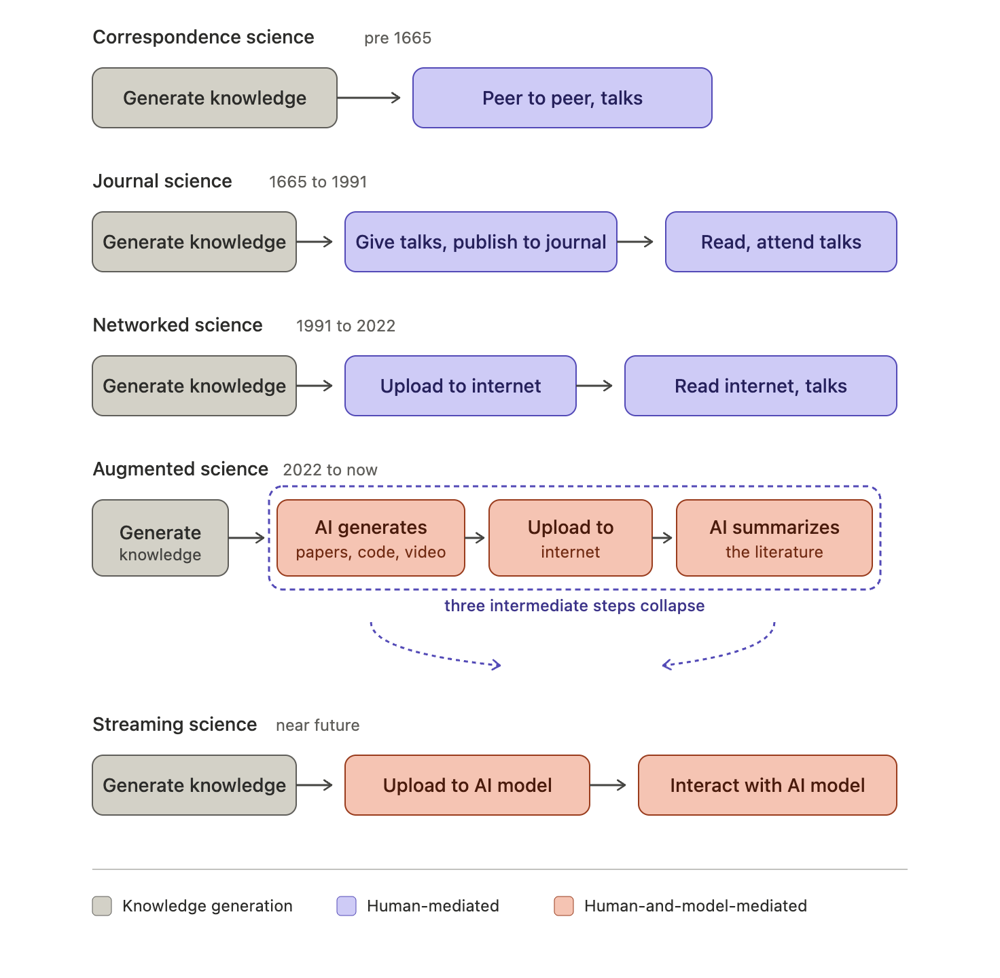

June 1, 2026 — by W. J. Zeng
Consider a new form for scientific conferences: a subcommunity continuously streams their research artifacts over the next year into an AI model. Then, to organize a conference, you interact with the model to have it suggest a program of invited speakers and what they should talk about. You can prompt any particular criteria into it that you like to frame those decisions. This is Streaming Science. There’s been three hundred and sixty-one years of journal science and thirty-five years of internet science. We’re now undergoing a transition to a new paradigm of scientific activity.
The practice of science today, at least in my field of quantum information and computation, has a particular form. You come up with what you believe is new knowledge, for example through experiment, simulation, theory, divination, AI psychosis, or a Ouija board. That knowledge is recorded in an “academic paper” that is published to the arXiv (and/or some journal). More recently that paper is often accompanied by a code or data repository, explanatory website or blog post, sometimes a press release or journalist/blog coverage, slides, talks, or video explainers. Typically the “academic paper” is viewed as the core contribution and the rest as explanations that are derivative from it. This is probably not a fair view. After that the artifacts are published, sometimes with peer review, other scientists digest that information by reading/viewing/importing the knowledge artifacts. Finally, it appears critical to the social activity of science that appropriate credit to the people and/or institution that produced the knowledge is recorded on the artifacts.
The basic structure is that (1) scientific activity produces artifacts that contain new information (2) that information is shared/published (3) other scientists (and the general public) make use of that information.
While there are still specific hardcopy scientific journals (Nature, Science), the publishing of scientific knowledge has loosened broadly to “uploaded to the internet in a way that timestamps my credit”. Michael Nielsen called this paradigm Networked Science as he heralded its arrival in 2011. Increasingly, we are entering a new paradigm: “uploaded to the internet in a way that timestamps my credit and is compressed into an AI model that maybe does or maybe doesn’t remember my credit.” Let’s put the question of credit aside for the moment and come back to it later.
A lot of effort goes into creating the structured, human readable artifacts that make up science today. This is important and useful synthetic work! But AI models can also accept unstructured data in ways that humans find difficult. Because of this, we’re likely to evolve to scientific activity that looks more like (1) produces research artifacts that contain new information (2) that information is uploaded into an AI model (its training set, its context or something else) (3) other scientists interact with the AI model to learn about new information.
The following is a diagram of these phases of scientific paradigms with some loose dating. There’s lots of overlap between paradigms and the new paradigms extend the previous one and don’t replace them. Scientists talking peer to peer and the giving of public lectures and talks has not gone out of style (and hopefully never will).

The last two paradigms are integrated with and influence by model large language model style AI. Jess Riedel has some great examples of how “writing for an LLM” could change scientific style. This is still paper-mediated science but one that is optimized for model consumption. It is Augmented Science, but still skeuomorphic. I’d push further and suggest that we won’t only have artifacts that look at all like documents or academic publications. We’ll have mixtures of code, data analysis, lab notes and data itself that can be uploaded as they are produced. There won’t be a requirement to summarize into “publication” chunks or even into written documents, though those summary chunks will also be valuable contributions that will be important for human alignment and evaluation. This flexibility will save overhead (avoiding the storytelling tax and the engineering tax) and lead to faster, better science.
Eventually, fully unstructured data can be sent directly into the AI model and, importantly, it can be streamed in continuously directly from scientific instruments or analysis software. One can imagine your local laboratory model uploading its learnings (or its compressed weights) to a global science model in some neuralese language. There are challenges that separate today’s models from continual learning ones, but this looks to be the long run direction of travel.
This sort of a streaming model is useful not just for new research publications, but for organizing research communities. Importantly, this emphasizes that a Streaming Science isn’t just about having a single WorldBrainModel that captures all of science, but rather an ecosystem of human and AI brains that work together to advance the scientific enterprise. There are lots of philosophical and practical consequences of this that I recently wrote some inconclusive discussion about.
Privacy, crypto, and getting credit
It is important to human scientists that they get credit for their research. So initial objections to Streaming Science might be that scientists are afraid that the credit for their research will get assigned by the AI to someone else. How do we trust the AI model to appropriately judge credit assignment? One can imagine totally new systems of science where discovery credit doesn’t matter[1], but for now let’s stick with the current one where it does.
As a matter of practical adoption, the transition to AI assisted science would benefit from open and transparent infrastructure that supports private data and credit assignment. A trusted centralized repository of authorship (like the arXiv and github) has worked well for this in Networked Science and could continue to work well in the future if appropriately supported and adapted. The arXiv already has had to develop new policies to deal with AI generated submissions and these will need to rapidly adapt. However, the transition to Augmented and Streaming Science gives us a chance to reevaluate alternatives to centralized sources of trust.
Cryptography could help here. For example, instead of uploading all the details of your result, you upload a zero-knowledge proof that you have the result. This was how Google published their recent results about optimizing Shor’s algorithm for quantum cryptanalysis. Then only you have the key to reveal how it was done (and so prove your authorship). Other methods could include having every artifact uploaded to the AI model be cryptographically signed by its author and committed to by its content hash. Content-addressed infrastructure like IPFS and Sigstore already provides much of this for software and data; scientific artifacts could be a natural extension. To the extent you want to define primacy of discovery without a trusted central authority, there are systems like OpenTimestamps. DeSci movements have developed some of this infrastructure already, and having an AI model interpret the on-chain (or on-log) scientific research artifacts gives a boost to the usefulness of their cause. A lot of these new technologies are only interesting to the extent you are concerned about trusting centralized credit systems. What’s new about AI is that the barrier to switching from a centralized system to a decentralized one could be lower because your AI agent can help with the conversion. For example by automatically generating a zero-knowledge proof of your result for you. Of course then you need to trust that your agent generated it correctly…
These ideas are mostly around attribution for the inputted data, and it remains an open and interesting question about how to solve for data attribution in the responses from the model. This could be some updated version of influence functions that are more practical.
A separate open problem is how to give streamed scientific data (continuous outputs from instruments rather than discrete papers) that go into some future continually learning AI model the same provenance guarantees that hashing gives discrete artifacts.
Jess Riedel reminded me that we should also consider that Augmented Science has a lot of improved features for assigning credit: they’ve read everything and won’t miss any citation, they have access to full datasets for establishing primacy, can apportion credit to scalably and appropriately to smaller units of ideas, etc.
Optimal Scientific Contributions
I’m tempted to think about these AI models as compressed representations of scientific knowledge.[2] In Compression is all you need: Modeling Mathematics, the authors take this perspective to propose some quantitative measures for “taste” and “interest” of statements/proofs in different monoids that are proposed as a toy model for mathematics. They look at scaling laws for these toy monoid models and compare them to some data on mathlib. Others have looked directly at the network structure of mathlib, where you can then consider the impact on the network that a particular new definition/proof/theorem would have.
If we use/study AI models this way, then they give us a concrete framework for analyzing different scientific contributions. For example, one could ask: “What contribution to the AI model will allow it to compress the most, or improve loss the most?” Here too scaled influence functions and related ideas like TRAK, etc.
The right unit of scientific contribution may turn out to be compression improvement that your work produces in the shared model.
With thanks to Jess Riedel, Alfredo Guevara, Simone Severini, Alex Lupsasca, and Phoebe Zeng for discussions and review of this post.